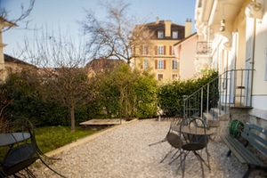
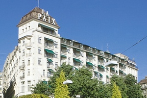
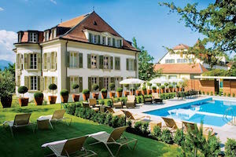

EAT & DRINK & VISIT
We made the most important places available via a detailed printable guide.
Xavier is our local connoisseur. He takes taste very seriously and hunts for the best places to enlight his and his guests’ palate. From the best wine producers and local microbrewers to the best place for brunch, hearty meal or chocolate, Xavier knows them all. We encourage you to trust his advice and discover these handpicked places yourself.
GETTING TO LAUSANNE
The conference will be held in Lausanne, a fascinating mixture of influences, nested between the Alps and Lake Geneva.
By Train
If you are arriving from Europe, consider coming to Lausanne by train. Lausanne has fast and direct connections from Paris & Milano and most European capital through Geneva, Basel, Zürich, Bern or Milano.
Enjoy a stress-free travel and enjoy a gorgeous landscape using the excellent system of Swiss railways, renowned for its efficiency.
From Geneva, you can reach the city centre in 35 min for 27.- CHF and it will take you 2h15 min and 77.- CHF if you are coming from Zurich.
You will find a complete timetable on the CFF/SBB/FFS website .
By plane
Geneva as well as Zurich Airport will welcome you whether you are coming from Europe or further away. They both have very convenient and direct train connections with Lausanne.
By Car
 From Geneva take the highway A1, follow the signs Lausanne-Sud/Lausanne-Ouchy/Lausanne-Centre and exit at Lausanne-Malley toward Lausanne-Centre.
From Geneva take the highway A1, follow the signs Lausanne-Sud/Lausanne-Ouchy/Lausanne-Centre and exit at Lausanne-Malley toward Lausanne-Centre.
From Zurich follow highway A1/E25, follow the signs for E62/Genève/Lausanne-Sud/Lausanne-Crissier and exit at Lausanne-Malley toward Lausanne-Centre.
To drive on Swiss highways you will need to have a vignette (toll sticker) which costs CHF 40.-. You may buy it at the border.
The Carlton is our conference hotel
Established in a superb building dating from the beginning of the 20th century, yet newly renovated, you’ll spend the best nights thanks to the ultra-comfortable ‘Elite’ bedding and the hotel quiet neighbourhood. The director, Nicolas, will reserve you the warmest welcome, making sure your needs and desires are fulfilled and providing every useful information about Lausanne.
Near the lake side and 500m from the main railway station, you’ll just have one step to take to catch the metro going to the city centre and the theatre Arsenic.
From CHF 190.-
The other sleeping options

Lausanne Guesthouse
Cheap and tasteful, this Guesthouse is perfect for tighter budgets.
From 90.- CHF

IBIS Hotel
This IBIS hotel is the closest to the venue. You can get there in 10 minutes.
From 130.- CHF

Hotel de la Paix
Located next to the St-François square, this hotel boasts a breathtaking view on the lake.
From 315.- CHF

Hôtel Angleterre & Résidence
Situated on the lake shore, this luxury hotel is only 5 minutes from the city centre by metro and guests can benefit the wonderful SPA of the Beau-Rivage Palace, next door.
From 280.- CHF